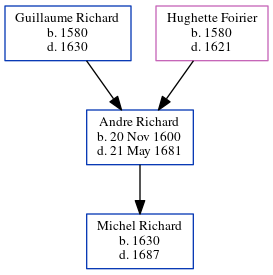

Andre Richard 1600 - 1681
[ Home ] | [ Calendar ] | [ Surnames Index ] | [ Family History ]The child of Guillaume Richard and Hughette Foirier Andre Richard, the 10 times great-grandfather of Michele Copp (née Phillips), was born in Loudon, Vienne, Poitou-Charentes, France on Nov 20, 16001. He had 1 child, Michel. He arrived in Quebec, Canada in 1649.
He died on May 21, 1681 in Port Royal, Nova Scotia, Canada.
Parents
- Guillaume was born in 1580
- Hughette was born in 1580
Children
- Michel was born in 1630
Citations
- Passenger and Immigration Lists Index, 1500s-1900s Online publication - Provo, UT, USA: The Generations Network, Inc., 2006.Original data - Filby, P. William, ed.. Passenger and Immigration Lists Index, 1500s-1900s. Farmington Hills, MI, USA: Gale Research, 2006.Original data: Filby, P. William, ed.. Passe
Family Tree
Generated by ged2site. Last updated on Jun 16, 2024